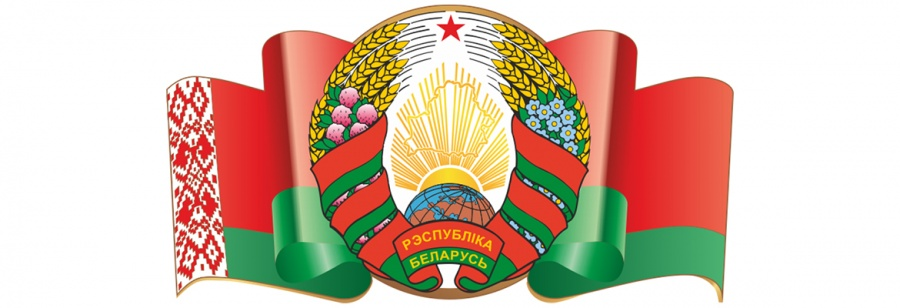
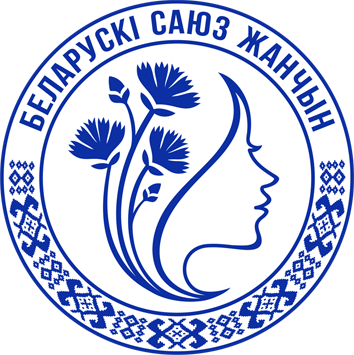
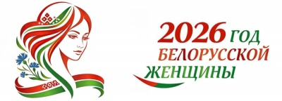
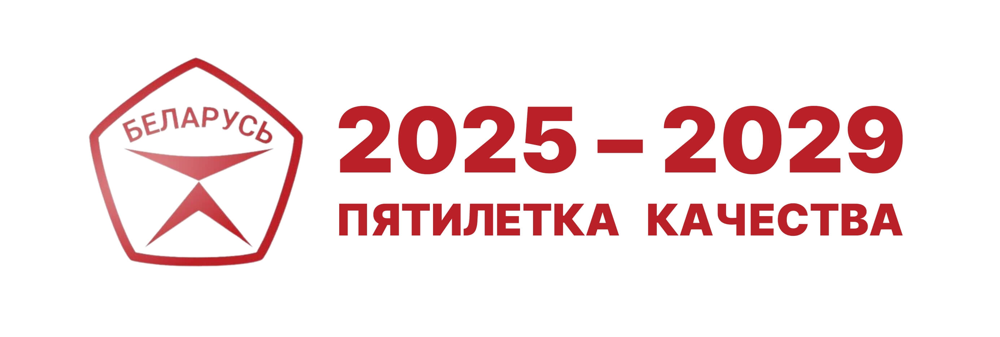

Идеологическая работа в трудовом коллективе — это системная деятельность, направленная на формирование гражданской позиции работников, уважения к истории и традициям белорусского народа, а также на создание условий для получения достоверной информации о жизни страны и региона.
Задачи идеологической работы:
- информирование и разъяснение в трудовом коллективе основных направлений внутренней и внешней политики государства;
- укрепление нравственных и культурных традиций белорусского народа, пропаганда семейных ценностей, здорового образа жизни;
- формирование взглядов, убеждений, которые отражают идеалы белорусского государства, патриотизм и национальное самосознание, активную личностную позицию;
- проведение мероприятий, посвящённых государственным, общереспубликанским и профессиональным праздникам, вовлечение работников в активное участие;
- обеспечение трудовой и исполнительской дисциплины;
- создание условий для полноценного труда и отдыха в трудовом коллективе;
- воспитание у работников чувства коллективной и индивидуальной ответственности за репутацию предприятия, мобилизация работников на решение поставленных задач;
- обеспечение условий для реализации государственной молодёжной политики;
- оказание социальной помощи работникам;
- организация в трудовом коллективе эффективной совместной работы нанимателя и общественных организаций.
В основе идеологической работы на предприятии — Директива Президента Республики Беларусь от 09.04.2025 № 12 «О реализации основ идеологии белорусского государства».
Директива №12

Директива № 12 определяет стратегические приоритеты идеологической политики Беларуси и задаёт чёткие ориентиры для работы в трудовых коллективах, органах власти и общественных объединениях.
На предприятии реализация положений Директивы осуществляется по следующим направлениям:
- Идеологическое сопровождение — проведение Единых дней информирования, встреч с представителями органов власти, экспертами, общественными деятелями.
- Патриотическое воспитание — организация мероприятий, направленных на сохранение исторической памяти, уважение к государственным символам, традициям и культуре белорусского народа.
- Информационная работа — обеспечение работников достоверной информацией о деятельности государственных органов, социально-экономическом развитии страны, общественно-политической повестке.
- Взаимодействие с общественными объединениями — поддержка первичных организаций Белорусского союза женщин, профсоюзного актива.
- Работа с молодёжью — формирование активной гражданской позиции, вовлечение в общественно значимые проекты, поддержка молодёжных инициатив.
Единый день информирования

Мероприятие проводится во исполнение Директивы Президента Республики Беларусь от 09.04.2025 № 12 и направлено на реализацию конституционного права работников на получение полной и достоверной информации.
Единый день информирования проходит каждый третий четверг месяца. В центре внимания — актуальные вопросы деятельности государственных органов, политическая, экономическая, культурная повестка, итоги работы органов власти, общественно значимые события в стране и мире.
Темы Единого дня информированияГосударственная символика

Государственные символы Республики Беларусь — Герб, Флаг и Гимн — являются неотъемлемыми атрибутами суверенитета и независимости страны, олицетворяют единство нации, её историю, культуру и традиции.
Использование государственной символики на предприятии осуществляется в строгом соответствии с законодательством Республики Беларусь и направлено на воспитание у работников чувства гордости за свою страну и уважения к нашей истории.
- Государственный флаг размещён на административном здании, а также в кабинетах руководства.
- Государственный герб присутствует в кабинетах руководства как символ власти и государственности и на информационном стенде.
- Государственный гимн исполняется в дни государственных праздников, во время торжественных собраний, церемоний награждения и других значимых мероприятий.
Общественные объединения
Первичная организация ОО «Белорусский союз женщин»


Женщины-работницы предприятия состоят в Первичной организации ОО «Белорусский союз женщин» администрации Ленинского района г. Бреста.
Telegram канал "Брестская область БСЖ" Официальный сайт ОО «Белорусский союз женщин»Год белорусской женщины

Президент Беларуси Александр Лукашенко объявил 2026 год Годом белорусской женщины. Тематику 2026 года глава государства озвучил в новогоднем обращении.
«Мы чествуем наших матерей, жён и дочерей один день в году. Настало время отдать должное их особой роли в нашей жизни и объявить 2026 год Годом белорусской женщины. Ничего более совершенного, чем она, природой не создано! Будем беречь нашу женщину и свою землю, защищать своё будущее — семью, родных, близких и друзей от бед и невзгод».
2026 год в Беларуси объявлен Годом белорусской женщины. Это решение подчёркивает особую роль женщин в развитии страны, признание их вклада в экономику, социальную сферу, воспитание подрастающего поколения и сохранение семейных ценностей.
Указ об объявлении Года белорусской женщины
Указ о Пятилетке качестваМолодёжная политика
Работа с молодёжью — одно из приоритетных направлений кадровой и социальной политики предприятия. Мы создаём условия для профессионального роста, творческой самореализации и общественной активности молодых работников.
Наша цель — формирование кадрового резерва, адаптация молодых специалистов в коллективе, развитие их потенциала и закрепление в строительной отрасли.
Основные направления работы с молодёжью:
- Профессиональная адаптация — за каждым молодым специалистом закрепляется наставник из числа опытных работников, помогающий освоиться на рабочем месте и в коллективе.
- Обучение и развитие — участие в семинарах, тренингах, конкурсах профессионального мастерства, программах повышения квалификации.
- Общественная активность — поддержка молодёжных инициатив, участие в работе первичных организаций ОО «БРСМ», «Белая Русь», Белорусского союза женщин.
- Корпоративные мероприятия — спортивные соревнования, культурно-массовые события, волонтёрские и патриотические акции.
Совет работающей молодёжи — коллегиальный орган, объединяющий активных молодых работников предприятия. Участники Совета инициируют проекты, представляют интересы молодёжи перед руководством, участвуют в планировании молодёжной политики.
На предприятии созданы условия для того, чтобы молодые работники не только успешно начинали карьеру, но и чувствовали себя частью большой команды, разделяли корпоративные ценности и гордились своей профессией.
Стратегия развития государственной молодёжной политики Республики Беларусь до 2030 года
В Республике Беларусь действует Стратегия развития государственной молодёжной политики до 2030 года, ориентированная на активное участие молодых людей в социально-экономической жизни, поддержку молодых семей и формирование гражданской культуры.
Ключевые приоритеты стратегии:
- Образование: повышение качества, поддержка молодёжных инициатив и развитие талантов.
- Занятость: минимизация безработицы, стимулирование первого рабочего места, поддержка предпринимательства.
- Здоровье: формирование здорового образа жизни (ЗОЖ), развитие спортивной инфраструктуры.
- Гражданственность: патриотическое воспитание, развитие волонтёрского движения, правовая грамотность.
- Социальная поддержка: помощь молодым семьям, обеспечение доступности жилья.
Основная цель стратегии — создание условий для самореализации молодёжи как активной части населения для обеспечения устойчивого развития страны.
Основной государственный информационный ресурс в сфере молодёжной политики